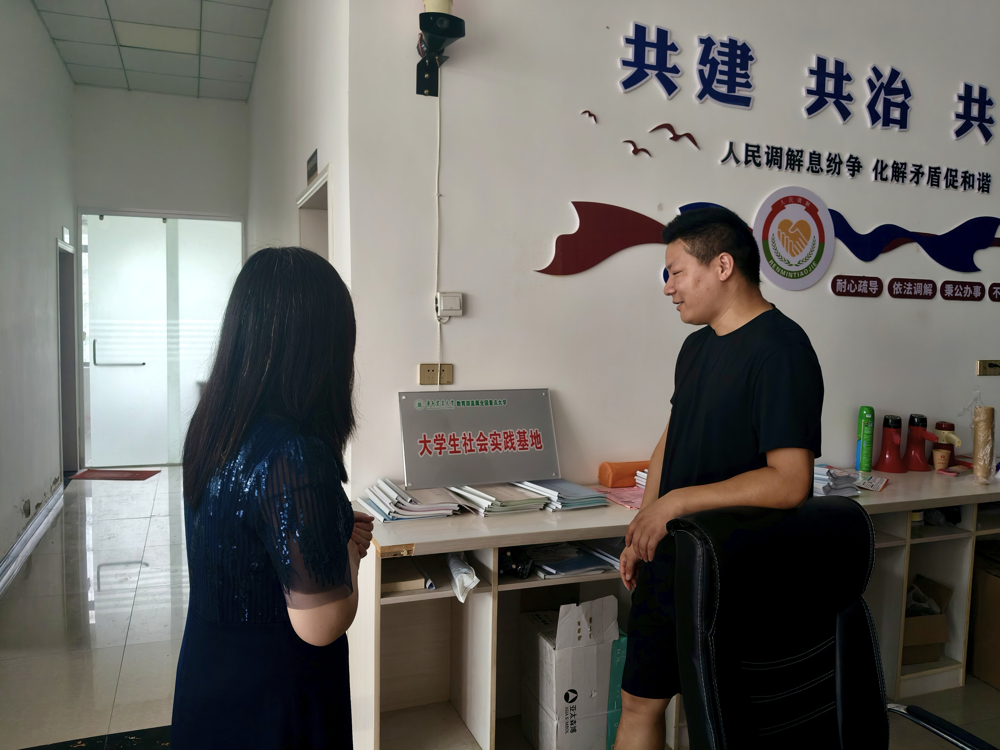

6,300亩生态稻田
700万年产稻米(斤)
15万年游客量
3推荐路线
特色体验
🏛
循迹研学
总书记考察足迹
🌾
稻虾共作
一田双收
🎣
生态农旅
路线·体验
📋
产业档案
溯源展示
💬
建言献策
反馈画像
热门推荐

循迹云梦
博物馆 · 总书记足迹
云梦县博物馆、睡虎地秦简、红色文化。

稻虾产业
双水双绿 · 生态种养
6300亩稻虾共作、新红水稻合作社。

生态农旅
路线 · 体验 · 打卡点
伍湖四海生态园、三条游玩路线。

产业档案
一田一码 · 溯源
示范田块、机械化插秧、产品故事。

建言献策
问卷反馈 · 游客画像
收集游客来源、偏好、文化认知与发展建议。
实践服务
理论宣讲 · AI科普 · 防诈骗 · 数字技能培训
→
休闲一刻
🦐
钓虾达人
手速挑战
30秒抓龙虾，连击加分！
🌾
插秧能手
反应挑战
看准位置快速种下秧苗！
🧠
伍湖知多少
知识问答
8道题测试你对伍湖的了解。
循迹云梦
云梦县博物馆 · 睡虎地秦简 · 总书记考察足迹
📍 2024年11月习近平总书记考察
从云梦到伍湖
2024年11月，习近平总书记考察云梦县博物馆。7月16日实践队追寻足迹完成研学，参观博物馆展陈、睡虎地秦简、文物修复中心和星空盘；随后前往龚华铭烈士纪念广场，瞻仰烈士纪念碑与烈士像。7月17-18日在伍湖村开展产业调研与人物专访。
📸 云梦县博物馆
博物馆外景 博物馆外景
博物馆外景 馆内参观
馆内参观 馆内展陈
馆内展陈 展陈参观
展陈参观📸 睡虎地秦简
 睡虎地秦简
睡虎地秦简 为吏之道
为吏之道 编年纪
编年纪 秦简说法
秦简说法 文物修复中心
文物修复中心 博物馆星空盘
博物馆星空盘 展陈记录
展陈记录 研学记录
研学记录🎬 博物馆研学视频
📸 龚华铭烈士纪念广场
 纪念广场
纪念广场 烈士像
烈士像 烈士纪念碑
烈士纪念碑📸 实践座谈
座谈会
 组长讲话
组长讲话 党员廉洁
党员廉洁循迹时间线
📍
2024.11 总书记考察云梦县博物馆
了解文物保护研究利用，为文化传承保护提供根本遵循
📜
睡虎地秦简
为吏之道、编年纪——云梦深厚的历史文化底蕴
🚩
2026 长征胜利90周年
走好新时代长征路，数字赋能乡村振兴
🏘
走进伍湖村
从县域文化资源走向乡村实践，用青年力量服务农文旅融合
文化故事
稻虾产业
稻虾共作 · 双水双绿 · 梦辰泽农业
🌱 6300亩生态种养 · 一田双收 · 户均增收1.8万
耕作插秧开插秧机器 机械化插秧
机械化插秧 田间管理
田间管理 粮食产后服务中心
粮食产后服务中心6,300亩生态田
700万年产稻米(斤)
252万年产龙虾(斤)
1.8万户均增收(元)
产业模块
产业档案
伍湖虾稻米示范田块 · 机械化插秧 · 完整溯源信息
→
生态农旅
伍湖四海生态园 · 打卡景点 · 路线规划
🗺 3条推荐路线 · 年接待约15万人次
 村内风光
村内风光 村内风景村内荷花
村内风景村内荷花 村内池塘
村内池塘 打卡点全景
打卡点全景 打卡点特写
打卡点特写游玩路线
体验项目
🌾
稻虾科普
了解生态种养模式
🏷
产品溯源
扫码知来源
🎣
钓虾体验
生态园互动项目
🍽
生态农庄
农家菜品尝
🛠
实践服务
AI科普·宣讲